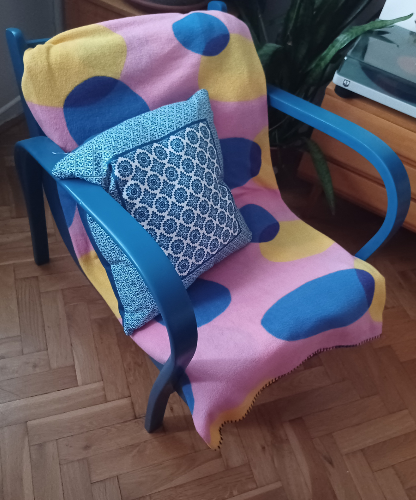

Pokud se toužíte ponořit do nepředvídatelného světa plného zajímavých a netradičních věcí, vizuálů a kreativní práce, našli jste to správné místo. V takovém světě se cítím nejlíp a dělá mi radost ho ukázat i ostatním a sdílet s nimi radosti, které nabízí. Ráda si v něm hraji s barvami, texturou, tvary, ale i se slovem a písmem nebo již vytvořenými věcmi.
Čti dál a určitě ti bude jasné, že se budeš chtít se mnou do tohoto světa vydat. Bude to grafický vizuál, text, co má názor a vizi nebo posunutí hranice své tvořivosti v DIY světě?
Martina Raclavská, kreativec s. r. o.
Kritik
Kritika neznamená nic jiného, než mít svůj názor. A pokud ho dokážete napsat i poutavě "na papír", máte vyhráno. Je to tak jednoduché? Možná. Nejdůležitější je, se o danou problematiku zajímat, přemýšet o ní a číst názory ostatních. Ten váš hlas se nakonec vykrystalizuje a postupně bude nabývat na ladnosti a originalitě.
A k čemu je kritika vůbec dobrá? Vrhá světlo na postranní uličky, které vedou k nalezení významu jednotlivých uměleckých děl. A nebylo by překvapivé, když byste v těch uličkám zjistili, že se ve vás postupně rozsvěcí vaše vlastní záře. A ta začíná ozařovat nejen krásy a chyby světa, ale i rozmanitost jeho myšlenek i vlastního života.
Moje práce
DIYer

Možná si ale na závěr řeknete, jestli není lepší věci přetvářet než vytvářet. Hledat uplatnění pro to, co už ztratilo svůj původní význam a postrčit to novým směrem.
Krabice starých rodinných fotografií dá vzniknout fotografii zcela nové a unikátní. Už sice není odrazem určité události, ale zase láká do světa, kde ještě žijí generace předků a ti umí nyní létat a všichni společně prožívají nová dobrodružství.
Nebo staré opuštěné křeslo, které jen potřebovalo dodat odvahy a sebevědomí začít nosit výrazné barvy a stát se středobodem interiéru.
Moje práce

Napiš mi, udělá mi to radost!
Už víš, na čem se mnou chceš spolupracovat? Nebo se jen toužíš propadnout do světa imaginace a hravosti, který mě obklopuje? Napiš mi a společně určitě přijdeme na to, co spolu vytvoříme.
Email:martinaraclavska@seznam.cz


Dostali jste se až sem? Gratuluji! Povím vám tedy jedno tajemství kreativity. Musíte se naučit snášet nejistotu a nepohodlí své vlastní mysli a to až do doby (jakkoli dlouhé), než přijdete na to pravé!